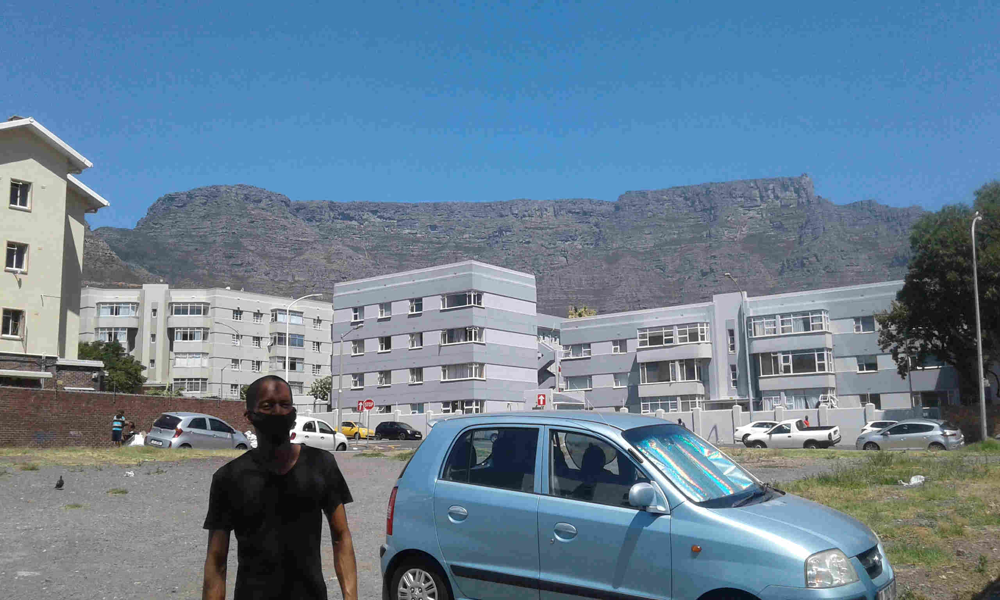
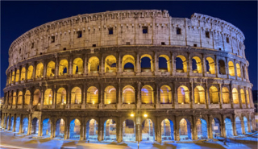
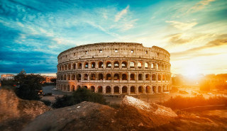
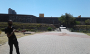

Vuyisa Ndubela

The Roman empire the City I would love to Visit

Rome has an almost overwhelming amount of ancient sites, bubbling fountains, spectacular art galleries and elaborate churches.

Common latin phrases to english
| Latin Phrase | English translation |
|---|---|
| 1. From the sky to the center | 1. A caelo usque ad centrum |
| 2. To set forth from false principles | 2. A falsis principiis proficisci |
| 3. From sunrise to sunset | 3. A solis ortu usque ad occasum |
Historical places in Cape Town

- The District Six Museum was established to keep alive the memories of District Six and displaced people everywhere.
- The District Six Museum curates and manages a unique collection of historical materials, fine prints and paintings,
- District Six Foundation was founded in 1989 and the museum in 1994

- In 1936, the Castle was declared a National Monument.
- Today, after land reclamation, the Castle stands almost a kilometre inland in the Central Business District.
- The Castle was built by soldiers, volunteers, slaves and Khoisan people undergoing punishment with local material
- city centre which was built in 1905. It is located on the Grand Parade
- On February 11, 1990, only hours after his release from prison, Nelson Mandela made his first public speech from the balcony of Cape Town City Hall.
- The building was designed as the result of a public competition, the winning architects being Messrs Harry